在武汉，找几个朋友一起练英语。聚会时大家围桌坐下，先互相认识，再分组聊一个话题。第一次来，可以从最近看的一部电影、常去的一家小店聊起。
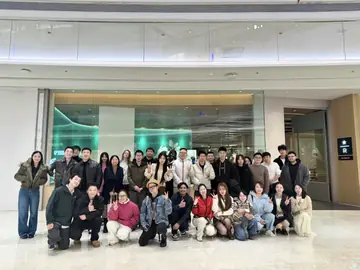
第三期分成四组，每组六人。先破冰，再聊当期的话题，最后自由交流，把时间留给大家真正好奇的事。
第四期换了场地。Yigrette 在回顾里写到，她最喜欢的是大家愿意认真倾听，给彼此开口的空间。
按期展开，点照片可以看大图。
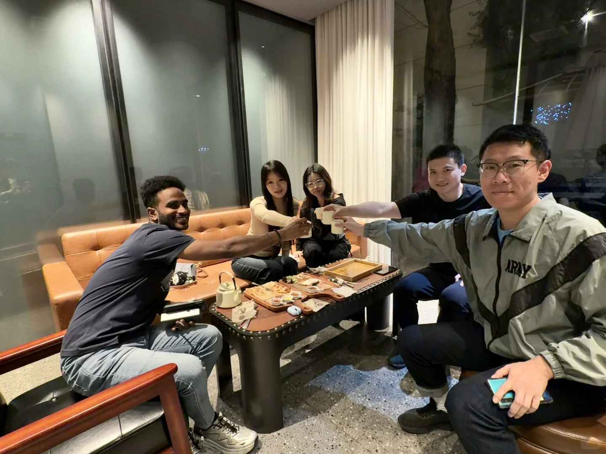
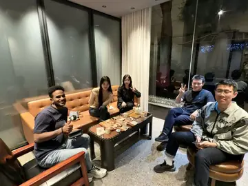
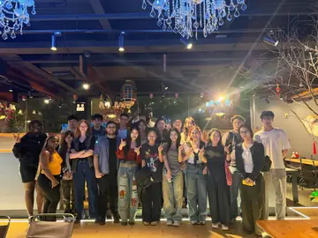
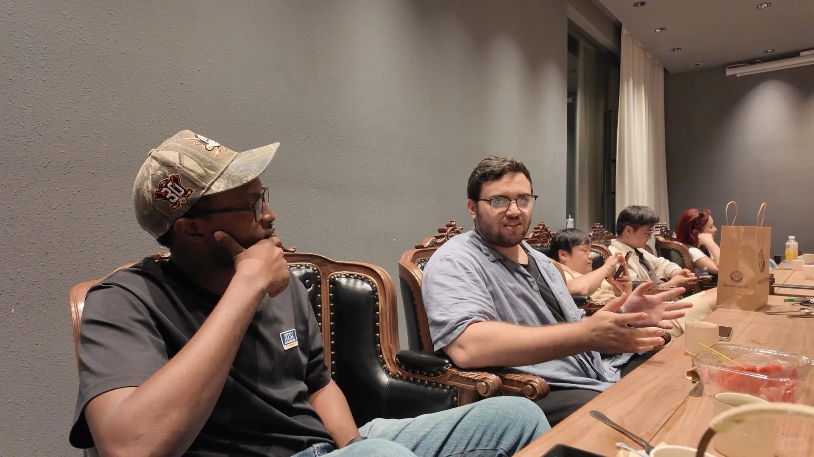
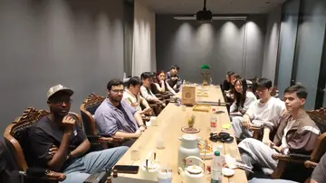
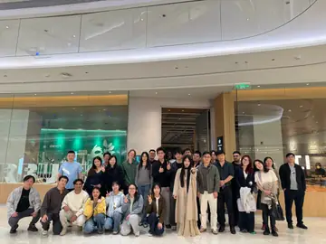
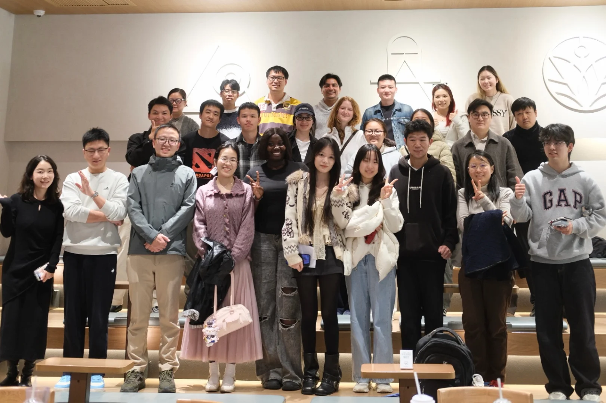
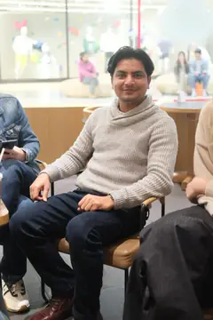
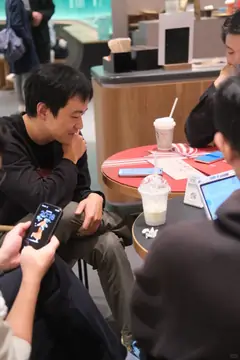
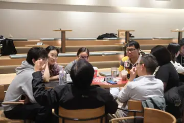
用小红书或微信扫码联系组织者 Yigrette，问问下次聚会的时间、地点和报名方式。在手机上可以点开二维码，长按保存，再用对应的 App 识别。


 小红书 · Liora ↗
小红书 · Liora ↗